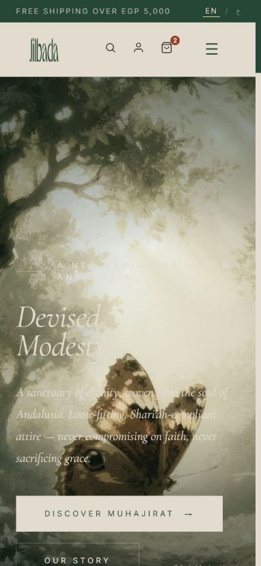

Collection-led navigation
The interface organises the fashion story into distinct collections.
Websites
A fashion storefront shaped around modest clothing, heritage and a calm editorial voice.
Collection-led navigation and immersive photography connect the brand story with the shopping experience.
HTML5 / CSS3 / JavaScript / Intersection Observer
The interface organises the fashion story into distinct collections.
CSS transitions and scroll reveals support the editorial imagery.
Responsive layouts give the collection images and primary actions room on smaller screens.

